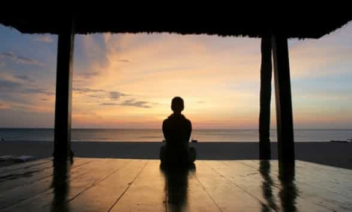
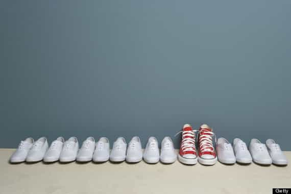

Tony is a philanthropist and philosopher. He spends his free time reading, traveling the world, exercising and living in the moment.


Loneliness versus aloneness. The two sound very synonymous, but carry totally separate ideas. The thought of feeling lonely versus the thought of being alone are very different. Osho has spoken in great depths on here and here.
The thought of loneliness is a life hindrance, while the thought of aloneness is a life helper. When you feel lonely you feel all things negative about yourself; however, when you are in aloneness, you feel all things positive about yourself.
Perhaps you have felt lonely many periods in your life. Maybe the idea of feeling lonely has had you running all of your life. Perhaps you stuck around in bad long term relationships, lived too long with your parents, went out to bars every night for a deep-rooted fear that you would be to yourself.
This is where the idea of need versus want comes to play. When you are lonely, you always feel the need to not be alone. You are desperate for love, attention, affection and entertainment of others, because the idea of aloneness scares you. Maybe you are that person who jungle vines from one long term relationship to another. You have not given time to your aloneness, and because of this you have experienced loneliness.
Understand at the end of the day it is you and ultimately you who deals with your hang-ups, emotional issues, and other weaknesses of your body and mind. As they always say, no one cares about you more than yourself. I always recommend steps towards aloneness, and here are some of them.
Living with your parents is one of the quickest ways towards complacency because you lose out on introspection. Your parents become the go-to, whether directly or indirectly on your progress in life. Yes, your parents know you better than anyone else, but they are still entities separate from you. They may know about you, but they do not know everything about you.
Moving out of your parents’ home, and getting your own pad is a first step towards independence and truly getting to know yourself. Living with a roommate is better than living with your parents, but living alone is probably the best thing any man can do for himself. When living alone, you learn how to be self-reliant and resourceful.
After a relationship, the best thing one should do is be single. My recommended time of being alone is at least two or three years. During this time you must take away the need to be in a relationship with another female. This is the time when you get back to doing all the things you could never do or enjoy fully in that relationship.
This is the best time to breach your comfort zones. Never played an instrument before? Go try it. Are you a homebody? Go hiking, indoor or outdoor rock climbing. There are men who get so used to being in a relationship that they end up jumping right back into another one for fear of being alone. When you find relationships based on loneliness, you end up unconsciously finding the next partner who resembles the previous relationship(s). Through aloneness you learn about yourself, and that ultimately helps you with finding the right types of people down the line.
Do you find yourself being with friends or family every day or month? Take an extended time away from your family and friends to get more in touch with yourself. Your friends and family can be very impressionable to you. Perhaps you have a nagging mother who puts you down because of your unkempt room, maybe your circle of friends are a negative bunch, maybe they are just as lazy and unenthusiastic as you.
It would be hard being consciously aware of your thoughts and actions, because your friends and family are hindrances to your development. Taking some time away from them will allow you to see what you need in your life’s journey. Aloneness brings clarity and certainty.

There is nothing better than traveling alone. It breaks you into the true reality of life. You get to learn about cultures, mannerisms, customs, and languages. When you travel with others you may lose the richness of life that is going on around you. You get lost in plans and compromise things that you would not inherently do because of that other person.
Maybe you want to attend a tomato throwing event or run with the bulls in Spain, eat sheep’s head in Norway, or backpack through three specific countries you have been dreaming of in Europe. Traveling alone allows you to do the things you want to do and fully experience it.

I recommend taking some time away from the things you once thought were a necessity. The need to go out every night and pick up chicks, the need to be in a relationship, the need to be around friends, the need for material things, the need for noise or constant motion.
You do not need these things. You need YOU, right here, still, and in the moment. Being in the moment with yourself, your mind and emotions allows you to mature into a supreme individual. Let all the things that are dissatisfying be your universal message of what you need to improve. Your aloneness is what is craving your attention, your loneliness is what is deteriorating your life.

Aloneness brings forth acquaintance with the mental, physical and spiritual YOU. If you have experienced a breakup or divorce, this is the perfect time get to know yourself. In some of those relationships, a man loses part of himself, because he was too busy giving to his partner’s happiness and not looking inward at what makes him happy.
Reassess where you are in life, your strengths, weaknesses, goals and aspirations. Start by getting back to the things that make you intrinsically happy. It’s a step at making an assessment of where you are in life, analyzing strengths and weaknesses.

When you spend time in aloneness, you increase self-love, self-reliance, and resourcefulness. Aloneness makes you an independent person, relying on yourself as your own best teacher, brother, friend, and caretaker. You start to look more at the best interests of yourself.
Study your behaviors closely because it is a message of what may need to change in you. Time spent in aloneness helps with outcome independence, knowing that if a situation didn’t go as plan with a person, place, or thing, you always have your health and happiness to go home to.
If you were to equate this concept to getting with women, aloneness is very attractive. It non-verbally communicates that you are confident and comfortable with who you are. This decreases neediness, because you know that if a female were to ever reject you, you still have you to love.
Aloneness makes you important, and you place your needs before others first. With aloneness you grow into a strong, self-reliant and thoroughly introspective individual. No matter what the odds, you always know that you have someone to continue to focus, appreciate and make a better man, and that person is YOU.
Read More: The Value of Self-Reliance